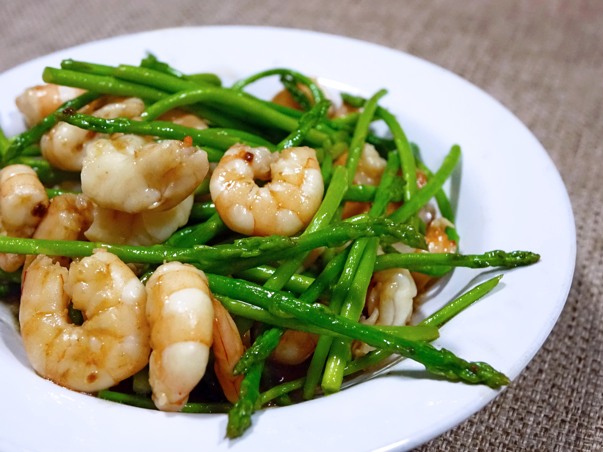
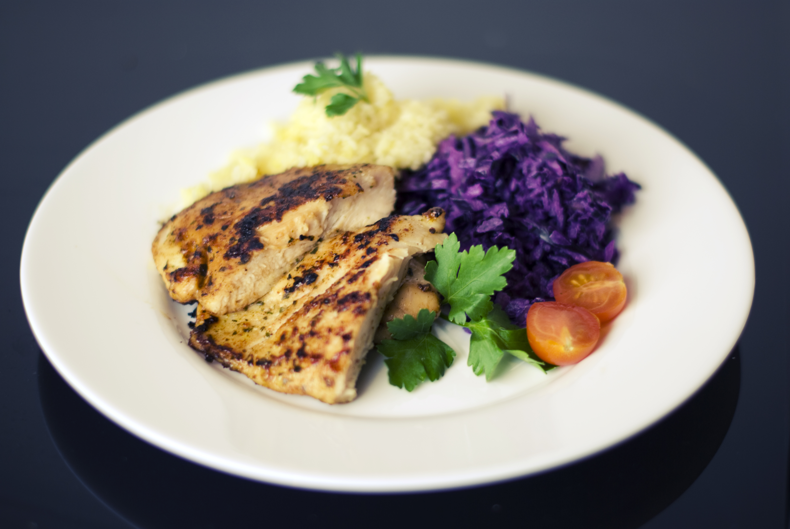

LIGHT HOME ABOUT CONTACT
Light Theme
晚餐
首推一
首推二
About
晚餐首推菜式一
">
芦笋炒虾仁

芦笋炒虾仁是一道大众菜肴。主要材料有虾仁、芦笋等。它的烹调方法简单易学，营养搭配合理。在口感方面，它色泽鲜艳，口味宜人，爽口、开胃，深受大众喜爱。同时营养价值丰富，具有营养素互补的特点以及健美抗衰老的作用。
晚餐首推菜式二
">
极品鸡肉沙粒

鸡肉沙拉是一道菜品，制作原料有鸡肉、肝泥子、奶油沙司、香叶等。营养丰富，是滋补身体很理想的“济世良药”。
晚餐首推三
椰子汤
椰子鸡汤是广东一带的地方风味名菜，属于粤菜系，制作原料主要有椰子、鸡、料酒等。椰子鸡汤也是女性专属的养颜汤。具有是补肾健脑、补血养神、滋润肌肤功效。
Footer Banner Section
均衡搭配样样好